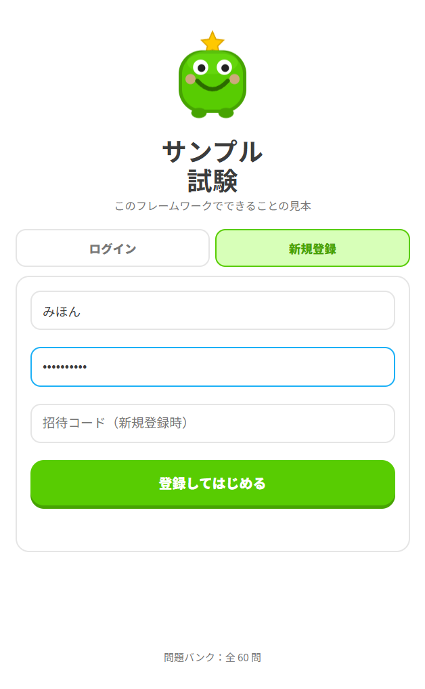
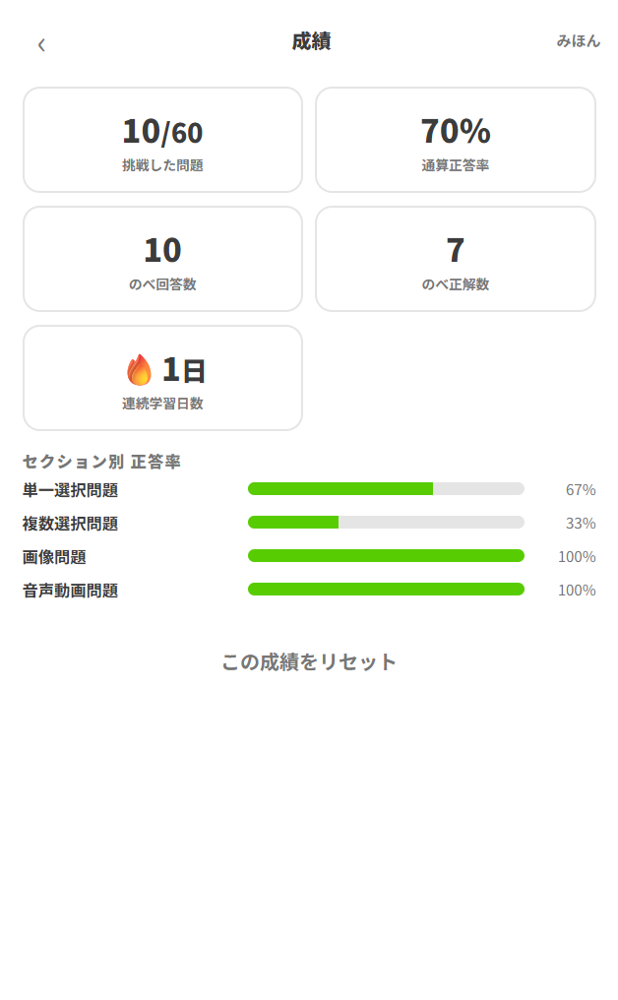
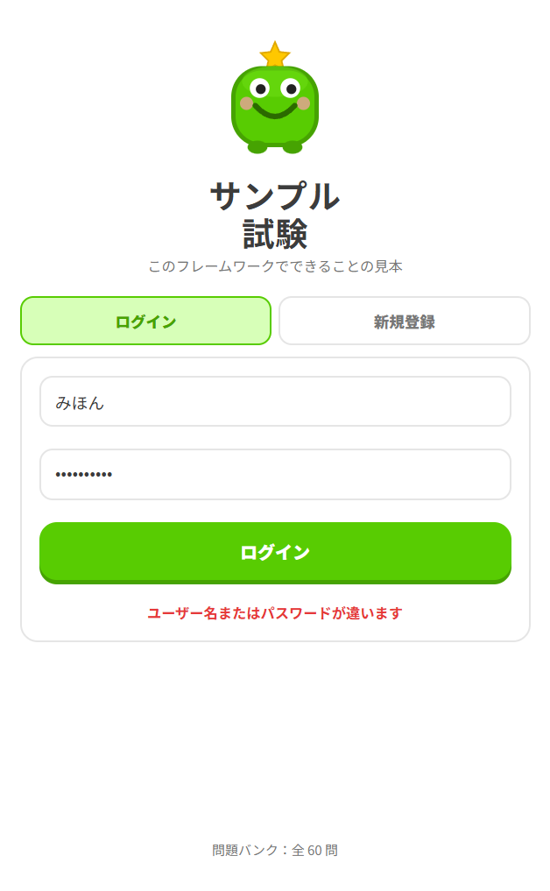

「どの問題を間違えたか」を覚えておくためです。この記録があるから、苦手な問題を優先して出題することも、正答率の伸びを追うこともできます。登録せずに使うことはできません。
1登録する
アプリを開くと、最初にこの画面が出ます。上のタブで「新規登録」を選んでください。

-
1
ニックネーム（ユーザー名）を入れる
24 文字まで。日本語も使えます。他の人が既に使っている名前は選べません。
-
2
パスワードを入れる
6 文字以上。あとで自分で変更する画面は用意されていないので、覚えやすく、かつ忘れないものにしてください。
-
3
招待コードを入れる（求められた場合だけ）
誰でも登録できないように設定されている場合、アプリを用意した人から渡されたコードを入れます。何も渡されていなければ空のままで大丈夫です。
-
4
「登録してはじめる」を押す
そのままログイン状態になり、ホーム画面に進みます。
「そのユーザー名は既に使われています」 — 別の名前にしてください。
「パスワードは 6 文字以上にしてください」 — 短すぎます。
「招待コードが正しくありません」 — コードの写し間違いか、渡されたものが古い可能性があります。アプリを用意した人に確認してください。
公開デモとして動いているアプリでは、新規登録タブが出ずに「デモ開始」ボタン 1 つだけが出ることがあります。その場合はお試し用のアカウントが自動で作られ、成績は毎回まっさらな状態から始まります。
22 回目以降のログイン
次からは「ログイン」タブに、登録したニックネームとパスワードを入れます。
一度ログインすれば約 30 日はログインしたままになります。毎回入力する必要はありません。ただし次の場合はログインし直しになります。
- 自分で「ログアウト」を押したとき
- ブラウザの履歴・サイトデータを消したとき
- 別の端末や別のブラウザで開いたとき
- プライベートモード（シークレットウィンドウ）で開いたとき
スマホで解いた続きを PC で見る、といったことができます。同じニックネームとパスワードでログインすれば、どの端末からでも同じ成績が出ます。
3ユーザーで管理されるデータ
アカウントに紐づいて保存されるのは、次の 3 種類だけです。
| データ | 中身 | 何に使われるか |
|---|---|---|
| アカウント情報 | ニックネームと、パスワード（そのままではなく、復元できない形に変換して保存） | ログインの確認 |
| 問題ごとの記録 | その問題を何回解いたか / 何回正解したか / 何回間違えたか / 直近は正解だったか | 「間違え優先」の出題順、通算正答率、セクション別正答率 |
| 学習した日 | セッションを解き切った日付の一覧 | 連続学習日数（ストリーク） |
逆に、保存されないものもはっきりしています。
- メールアドレス・本名・電話番号といった個人情報（そもそも入力欄がありません）
- 1 回 1 回のセッションの履歴（「何月何日に何点だった」という記録は残りません）
- どの選択肢を選んだか（正誤の回数だけが積算されます）
結果画面に出る「10 問中 7 問正解」は、そのセッションを閉じると消えます。残るのは問題ごとの通算だけです。日々の点数を記録したい場合は、自分でメモを取ってください。
オフライン（機内モードなど）でも問題は解けますが、その結果はサーバーに届かないため記録されません。成績を残したいときは通信できる状態で解いてください。
4学習の進行度の確認方法
ホーム画面の「成績を見る」を押すと、いまどこまで進んでいるかが見られます。

進行度を測るうえで、特に見るべき数字は 2 つです。
さらに下のセクション別 正答率を見れば、分野ごとの得意・不得意が分かります。一覧の中で目立って低いものが、次に手を入れるべきところです。
問題プールを一周し終えた合図です。ここで成績をリセットして正答率を測り直すと、知識がどれだけ定着したかが正直に出ます。やり方と狙いは 04. おすすめの学習方法 で扱います。
ホーム画面にも進行度の手がかりが 2 つ出ています。🔥 連続 N 日のバッジと、画面下の「問題バンク：全 N 問」です。後者は、その試験に入っている問題の総数です。
5パスワードを忘れたら
ログインに失敗すると、このメッセージが出ます。

まず落ち着いて、次を確認してください。
- ニックネームの打ち間違い（全角・半角、英字の大文字・小文字も区別されます）
- スマホの予測入力で余計な文字が入っていないか
- パスワードの先頭や末尾に空白が入っていないか
このアプリには、パスワードを自分で変更したり、「パスワードをお忘れですか？」からメールで再設定したりする機能が用意されていません。メールアドレスを預かっていないので、自動で送ることもできません。
どうしても思い出せない場合は、アプリを用意した人（管理者）に連絡してください。管理者はサーバー側でパスワードを再設定できます。連絡するときは次を伝えるとスムーズです。
-
1
登録したニックネーム
これが分からないと、どのアカウントか特定できません。
-
2
どうしたいか
「パスワードを再設定してほしい」のか、「成績は捨てて作り直したい」のかを伝えてください。
管理者に頼むのが難しく、成績を捨ててもかまわないなら、別のニックネームで登録し直すのが手っ取り早いです。ただしそれまでの記録はすべて失われます。ストリークもゼロからになります。
61 台を複数人で使う
家族や同僚と 1 台の端末を共有する場合は、人ごとにアカウントを作ってください。成績が混ざると「間違え優先」の出題がおかしくなり、正答率も意味をなさなくなります。
交代するときは、ホーム画面の「ログアウト」を押してから、次の人がログインします。ログイン後は名前が「こんにちは、○○ さん」と出るので、始める前にそこを確認する習慣をつけると安心です。